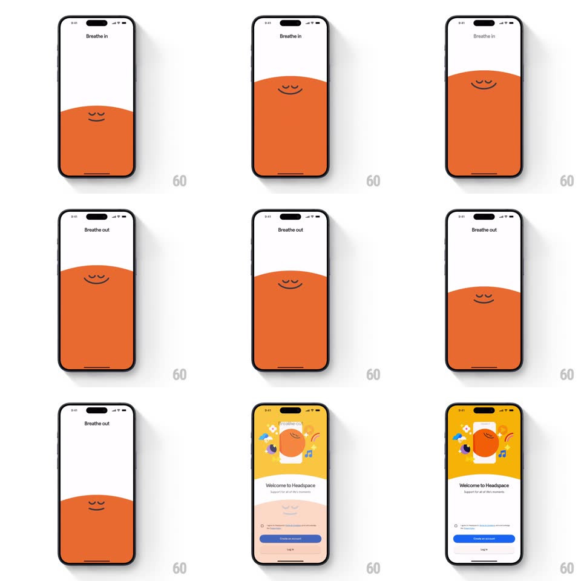

Media
Frame-by-frame

Rebuild this animation 1:1: Headspace's splash - the orange dot character breathes slowly over a purple horizon, then rises and morphs into the sun of the onboarding welcome screen.

Rebuild this animation 1:1: Headspace's splash - the orange dot character breathes slowly over a purple horizon, then rises and morphs into the sun of the onboarding welcome screen. ## Integration Integration: stack-agnostic spec - springs given as stiffness/damping, timed motions as duration + curve; map every value to your framework and animation library of choice. ## Scene A deep purple screen with rolling horizon hills. The Headspace dot - a yellow-orange circle with two small eyes - rests half-sunk behind the nearest hill, breathing. The splash hands off to the onboarding flow (welcome, coach intro, Ebb companion, content pages). ## Motion spec Pattern: breathing character + rise-and-morph handoff. - Breathing (loops 2-3 times, ~4s per breath): the dot expands 8% on the inhale (2s ease-in-out) and contracts on the exhale; its eyes close on the inhale peak and open on the exhale; the hills sway +-3px counterphase to the breath, and a soft glow halo around the dot tracks its size (opacity 0.15 to 0.3). - Handoff: after the final exhale, the dot rises from behind the hill (translateY -35% of screen, 900ms, ease-in-out) while growing (scale 1 to 2.2) and the purple sky lightens toward the welcome screen's palette; the hills sink away (translateY +10%, fade, 700ms). - The dot lands as the welcome screen's sun/hero (or the Ebb orb on companion screens), and the welcome copy staggers up beneath it (translateY 16px, 250ms, 80ms apart) with the primary button fading in last. - Content pages beyond (coach video, sleepcasts, care team) follow standard crossfade pushes; the breathing calm of the splash sets the motion tempo for all of them - nothing moves faster than 200ms anywhere. ## Calibration - The breath must be slow enough to feel like a breathing exercise: never faster than 3.5s per cycle. - The dot's eyes are two short vertical strokes - they scale, they don't blink shut with lids. ## Reduced motion Single slow fade from splash to welcome; no breathing loop. ## Don't miss - The dot is partially occluded by the hill while breathing - the horizon overlap sells the depth. - The color journey is purple-dusk to warm dawn; the dot stays the same yellow-orange throughout.